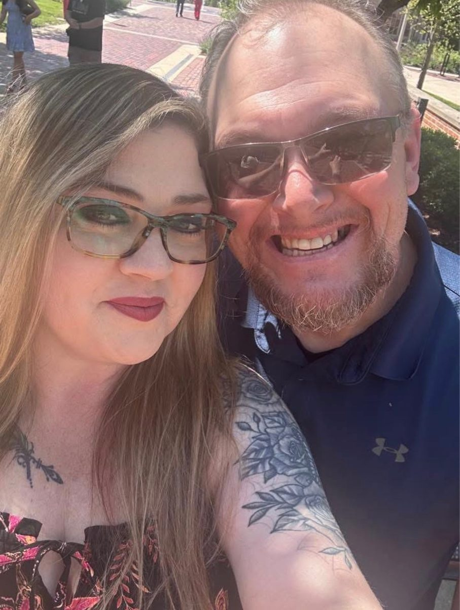
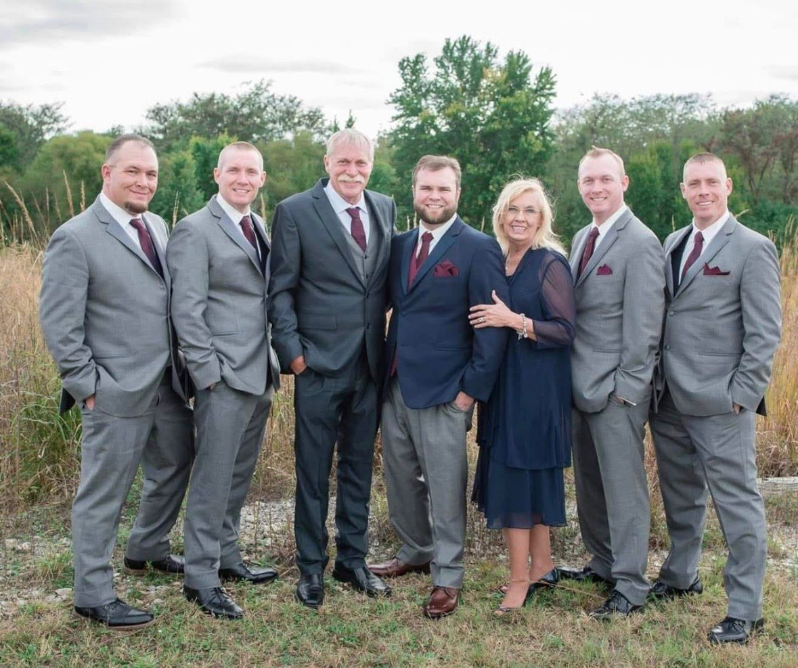
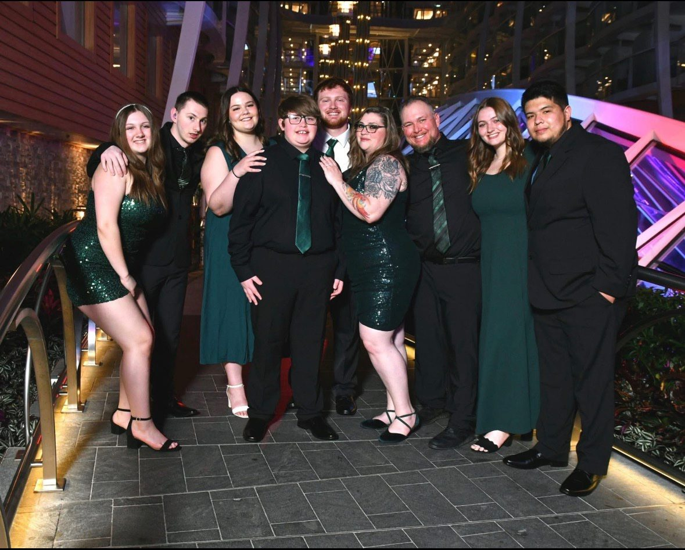
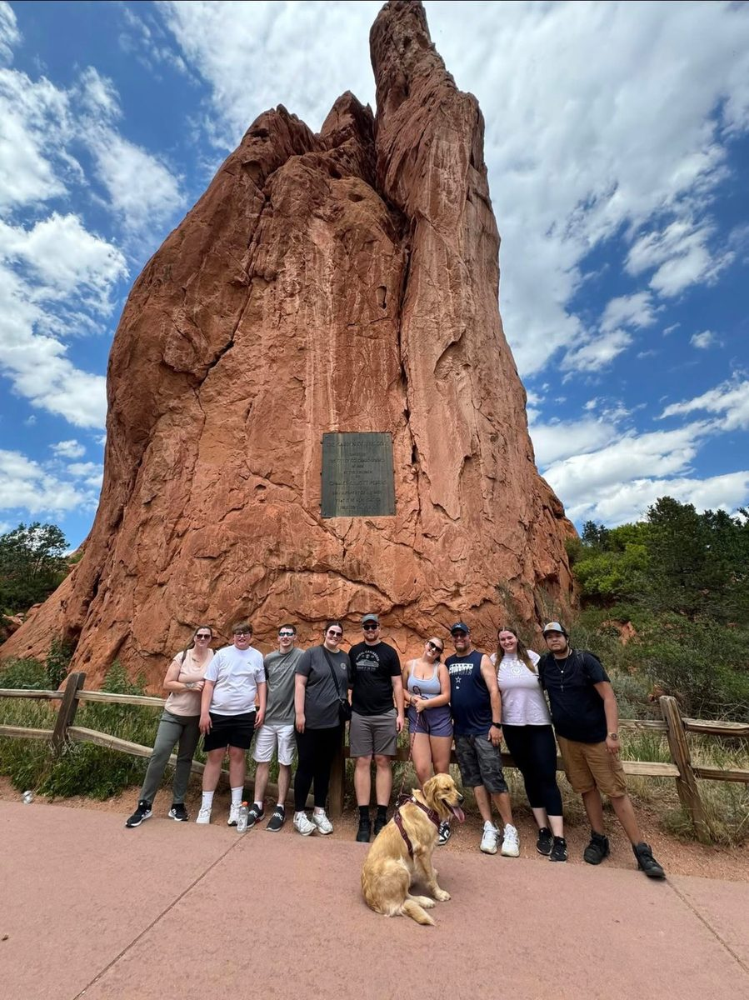

Same store, same person
At Green Hyundai since 2015. You deal with Gus directly — before, during, and after the sale.
About Gus
Gus has been selling cars at Green Hyundai in Springfield since 2015. He started at the bottom and worked his way up — and he's been named Salesman of the Month many, many times along the way. Most of his business is repeat customers and referrals, and that is by design: take care of people, and they come back and send their friends.

At home, Gus is a father of five kids, two dogs, and one cat. He loves going on vacations with his family and spending time with them — and that's what the work is for. He works to get people the best deals he can, and to provide for his family.
That is why the experience feels the way it does: the same person, the same straightforward answer, before, during, and after the sale.
Gus has four brothers, and most of them have been in car sales in the past or are in car sales now — following their father, who served thousands of people at Green Hyundai. Selling cars isn't just what Gus does. It's what his family does.

Gus with his four brothers and his parents.
When he's not at the dealership, Gus is usually with them — on a trip, out exploring, or just spending time together.


A straightforward car-buying experience. No pressure, no games — just an honest answer about what is on the lot, what is coming in, and what he can track down.
Take care of people, and they come back — and send their friends.
That is the whole approach, and it is why most of Gus's business is repeat customers and referrals.
At Green Hyundai since 2015. You deal with Gus directly — before, during, and after the sale.
An honest answer about what is on the lot, what is coming in, and what he can track down — and he will tell you straight if it is not a good fit.
The same person to call if anything comes up after the sale. The relationship lasts past delivery day.
The full new lineup — Venue and Kona, Tucson, Santa Fe, Palisade, Elantra and Sonata, Santa Cruz, and the electric IONIQ models. Gas, hybrid, plug-in hybrid, and EV.
Pre-owned Hyundais, including Hyundai Certified Used vehicles. Same store, same person to call if anything comes up after the sale.
Green Hyundai's pre-owned lot is not just Hyundais. It regularly carries Chevrolet, Ford, Toyota, Jeep, Nissan, and more — the mix changes constantly, so check the live inventory or just ask Gus what is there right now.